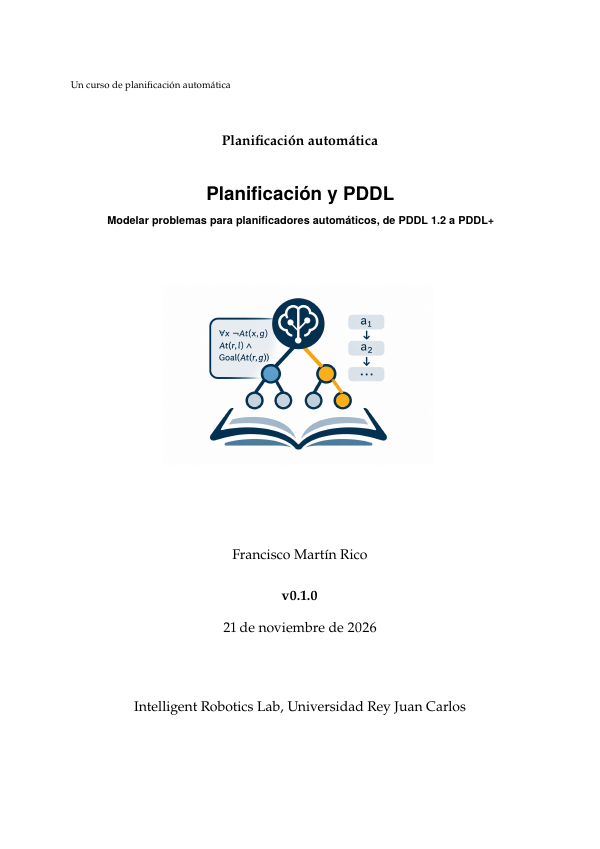

↓ Haz clic en la portada para descargar el PDF
Planificación y PDDL
Modelar problemas para planificadores automáticos, de PDDL 1.2 a PDDL+
Un planificador recibe la descripción de una situación, de lo que se puede hacer en ella y de lo que se quiere conseguir, y responde con una secuencia de acciones que lleva de lo uno a lo otro. La descripción se escribe en PDDL, el Planning Domain Definition Language. Este libro enseña el lenguaje completo, de PDDL 1.2 a PDDL+, y sobre todo a modelar: cómo pasar de una situación descrita con palabras a un modelo PDDL que un planificador resuelva bien, y cómo elegir entre las alternativas. Cada dominio y cada problema del libro es un fichero probado, y cada plan mostrado lo ha obtenido y validado un planificador.
¿Qué es PDDL?
PDDL (Planning Domain Definition Language) es el lenguaje estándar de la planificación automática. Un modelo PDDL tiene dos partes: un dominio, con los tipos de objetos, los predicados que describen un estado y las acciones con sus precondiciones y efectos; y un problema, con los objetos, el estado inicial y el objetivo. Un planificador lee ambos y devuelve un plan. PDDL nació en 1998 como lenguaje común de la primera Competición Internacional de Planificación (IPC), y desde entonces ha crecido con números, tiempo, preferencias y cambio continuo.
Todas las versiones de PDDL, de 1.2 a PDDL+
El libro recorre el lenguaje completo en el orden en que creció, desde el modelo más sencillo que un planificador puede resolver hasta los sistemas híbridos.
| Versión | Año | Qué añade | Capítulos |
|---|---|---|---|
| PDDL 1.2 | 1998 | Acciones con precondiciones y efectos; tipos; negación, disyunción y cuantificadores; efectos condicionales | 2–7 |
| PDDL 2.1 | 2002 | Fluentes numéricos; métricas de calidad del plan; acciones durativas; cambio continuo | 8–12 |
| PDDL 2.2 | 2004 | Predicados derivados; literales iniciales temporizados | 13 |
| PDDL 3.0 | 2006 | Preferencias (objetivos blandos); restricciones sobre todo el plan | 14–15 |
| PDDL 3.1 | 2008 | Fluentes de objeto; costes de acción | 9, 16 |
| PDDL+ | 2006 | Procesos y eventos: un mundo que cambia por sí solo | 17–18 |
El método MODEL
El libro construye un método de modelado capítulo a capítulo. Cada característica nueva del lenguaje añade preguntas que hacerle a un problema, formas de codificarlo y formas de equivocarse. Las alternativas se comparan con cinco criterios: fidelidad, tamaño, guía, claridad y portabilidad.
- MMapear la situación
Cuál es el problema, quién actúa, qué cuenta como resuelto.
- OObjetos y estado
Qué cosas existen y qué debe saber de ellas el planificador.
- DDinámica
Qué se puede hacer o puede ocurrir, cuándo, y qué cambia.
- EEnsayar el modelo
Ejecutarlo con un planificador: problemas triviales, típicos, imposibles y tramposos.
- LLectura crítica
Qué otra codificación serviría, y cuál es mejor aquí.
Contenido
Veinte capítulos en siete partes, para una asignatura universitaria cuatrimestral de planificación automática. Cada capítulo termina con ejercicios; las soluciones están en un apéndice.
Parte I — Planificación y modelos
- 1. Planificar: decidir antes de actuar
- 2. Un primer modelo: STRIPS
- 3. Qué hace un planificador con tu modelo
Parte II — Planificación clásica: PDDL 1.2
- 4. Tipos, constantes e igualdad
- 5. Condiciones más ricas
- 6. Efectos más ricos
- 7. Modelar problemas clásicos: patrones y decisiones
Parte III — Números: PDDL 2.1
- 8. Fluentes numéricos
- 9. Calidad del plan: métricas y costes de acción
Parte IV — Tiempo: PDDL 2.1 y 2.2
- 10. Acciones durativas
- 11. Coordinación en el tiempo
- 12. Cambio continuo
- 13. Predicados derivados y un mundo con calendario
Parte V — Preferencias y restricciones: PDDL 3
- 14. Objetivos blandos y preferencias
- 15. Restricciones sobre todo el plan
- 16. Fluentes de objeto
Parte VI — Sistemas híbridos: PDDL+
- 17. Procesos y eventos
- 18. Modelar sistemas híbridos
Parte VII — El método en acción
- 19. El método MODEL, completo
- 20. Caso de estudio: una misión robótica, de la historia a la ejecución
Apéndices
- A. Kairos, el planificador de los ejemplos
- B. Referencia rápida de PDDL
- C. Soluciones a los ejercicios
Un ejemplo de PDDL
El ejemplo conductor del libro: un robot mensajero en una planta de hospital. Es el dominio STRIPS con tipos del Capítulo 4, un problema que pide llevar medicamentos a la sala A y el plan que devuelve el planificador.
Dominio: courier-domain.pddl
(define (domain courier)
(:requirements :strips :typing)
(:types robot location item)
(:predicates
(connected ?from ?to - location)
(robot-at ?r - robot ?l - location)
(item-at ?i - item ?l - location)
(carrying ?r - robot ?i - item)
(free ?r - robot))
(:action move
:parameters (?r - robot ?from ?to - location)
:precondition (and (robot-at ?r ?from) (connected ?from ?to))
:effect (and (not (robot-at ?r ?from))
(robot-at ?r ?to)))
(:action pick
:parameters (?r - robot ?i - item ?l - location)
:precondition (and (robot-at ?r ?l) (item-at ?i ?l) (free ?r))
:effect (and (not (item-at ?i ?l)) (not (free ?r))
(carrying ?r ?i)))
(:action drop
:parameters (?r - robot ?i - item ?l - location)
:precondition (and (robot-at ?r ?l) (carrying ?r ?i))
:effect (and (not (carrying ?r ?i))
(item-at ?i ?l) (free ?r))))Problema: courier-p01.pddl
(define (problem courier-p01)
(:domain courier)
(:objects
r1 - robot
lobby corridor pharmacy lab ward-a ward-b icu dock - location
meds1 - item)
(:init
(connected lobby corridor) (connected corridor lobby)
(connected lobby pharmacy) (connected pharmacy lobby)
(connected lobby dock) (connected dock lobby)
(connected corridor lab) (connected lab corridor)
(connected corridor ward-a) (connected ward-a corridor)
(connected corridor ward-b) (connected ward-b corridor)
(connected ward-b icu) (connected icu ward-b)
(robot-at r1 dock) (free r1)
(item-at meds1 pharmacy))
(:goal (item-at meds1 ward-a)))Plan
$ kairos courier-domain.pddl courier-p01.pddl
; cost = 7
(move r1 dock lobby)
(move r1 lobby pharmacy)
(pick r1 meds1 pharmacy)
(move r1 pharmacy lobby)
(move r1 lobby corridor)
(move r1 corridor ward-a)
(drop r1 meds1 ward-a)Descarga todos los ejemplos PDDL
Todos los dominios, problemas y planes del libro, más de 900 ficheros PDDL, una carpeta por capítulo, cada una con su lista de pruebas y un script que los ejecuta todos con el planificador. Son los mismos ficheros en las dos ediciones.
↓ Descargar los ejemplos PDDL (ZIP, 0,6 MB)
| Capítulo | Ejemplos PDDL de | Ficheros |
|---|---|---|
| 1 | Planificar: decidir antes de actuar | 6 |
| 2 | Un primer modelo: STRIPS | 49 |
| 3 | Qué hace un planificador con tu modelo | 41 |
| 4 | Tipos, constantes e igualdad | 46 |
| 5 | Condiciones más ricas | 53 |
| 6 | Efectos más ricos | 58 |
| 7 | Modelar problemas clásicos: patrones y decisiones | 68 |
| 8 | Fluentes numéricos | 57 |
| 9 | Calidad del plan: métricas y costes de acción | 41 |
| 10 | Acciones durativas | 46 |
| 11 | Coordinación en el tiempo | 34 |
| 12 | Cambio continuo | 46 |
| 13 | Predicados derivados y un mundo con calendario | 47 |
| 14 | Objetivos blandos y preferencias | 44 |
| 15 | Restricciones sobre todo el plan | 48 |
| 16 | Fluentes de objeto | 32 |
| 17 | Procesos y eventos | 41 |
| 18 | Modelar sistemas híbridos | 46 |
| 19 | El método MODEL, completo | 66 |
| 20 | Caso de estudio: una misión robótica, de la historia a la ejecución | 52 |
Diapositivas
Siete clases de dos horas, una por cada parte del libro, con figuras y código PDDL. Haz clic en una diapositiva para descargar su PDF.
El planificador
Los ejemplos se ejecutan con Kairos, un planificador de código abierto que cubre todo el PDDL del libro: planificación clásica, numérica y temporal, preferencias y restricciones, y PDDL+. También comprueba modelos y valida planes. Se instala con pip install kairos-planner. Los modelos son PDDL estándar: el libro avisa de dónde otros planificadores leen una construcción de otra manera.
Preguntas frecuentes
¿Qué es PDDL?
PDDL, el Planning Domain Definition Language, es el lenguaje estándar para describir problemas de planificación: un dominio con tipos, predicados y acciones, y un problema con objetos, un estado inicial y un objetivo. Los planificadores leen PDDL y devuelven planes.
¿Qué versiones de PDDL cubre el libro?
Todas: PDDL 1.2 (STRIPS, tipos, ADL), PDDL 2.1 (fluentes numéricos, métricas, acciones durativas), PDDL 2.2 (predicados derivados, literales iniciales temporizados), PDDL 3.0 (preferencias y restricciones de trayectoria), PDDL 3.1 (fluentes de objeto, costes de acción) y PDDL+ (procesos y eventos).
¿Se puede descargar el libro?
Sí. El PDF del libro y las diapositivas se pueden descargar desde esta página y compartir bajo la licencia CC BY-NC-ND 4.0.
¿Hay ejemplos de PDDL?
Sí, más de 900 ficheros PDDL, que se descargan en un ZIP desde esta página. Cada dominio y cada problema del libro es un fichero probado, y cada plan mostrado lo ha obtenido y validado el planificador Kairos. Cada capítulo tiene ejercicios con soluciones.
¿Qué planificador usan los ejemplos?
Kairos, un planificador de código abierto que admite todo PDDL hasta PDDL+. Los modelos son PDDL estándar y funcionan con otros planificadores en la medida en que admitan las características usadas.
¿Hay versión en inglés?
Sí: Planning and PDDL es la edición original, con sus diapositivas, en la página en inglés de este sitio.
Cómo citar
Si usas este libro en tu investigación o docencia, puedes citarlo así:
@book{martinrico2026pddl,
author = {Mart{\'{i}}n Rico, Francisco},
title = {Planning and {PDDL}: Modeling Problems for Automated
Planners, from {PDDL} 1.2 to {PDDL+}},
publisher = {Intelligent Robotics Lab, Universidad Rey Juan Carlos},
year = {2026},
note = {v0.1.0},
url = {https://fmrico.github.io/book_pddl_web/},
license = {CC BY-NC-ND 4.0}
}